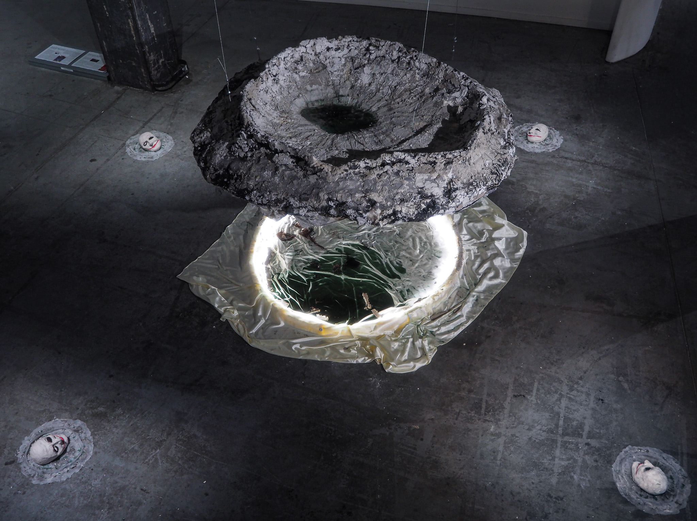

2025
performance, mixed media installation — polyurethane foam, plaster, mortar, silicone — performance activated by Jie @closebyparadise, soundscape by Apu Nanu @apu.nanu
Featuring a crater conjoined with an upside down pond, the work creates a landscape drawn from the artist’s personal mythology. A Star Named Pelvis explores self-reconciliation through inversion—often associated with sinister or demonological themes—reimagined as a symbol of resurrection and purity. Signaling in its title, the installation makes anatomical connections with trauma, as ‘information stored in the body’. The work builds on the concept of “Female Hysteria,” a historical diagnosis used ambiguously to pathologize women exhibiting symptoms of PTSD, depression, or infertility. In The Aetiology of Hysteria, Freud found out that hysteria often stems from repressed childhood sexual abuse, though he later retracted his findings due to personal, social, and political pressures. Examining structural violence through a critical lens, the work antagonises The Joker, through depicting his decapitated head as a representation of his mental disorders and the evils he committed. The work seeks to voice a sentimentality beyond psychoanalytical and cultural frameworks, reclaiming personhood.